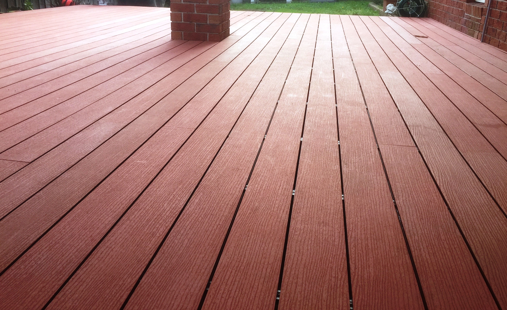
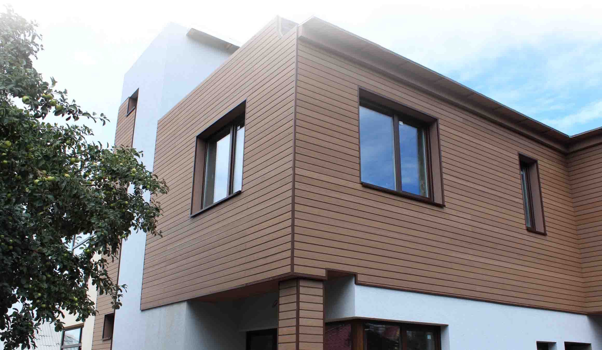
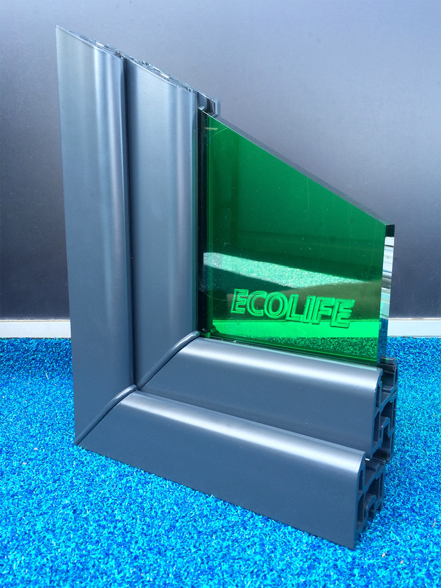
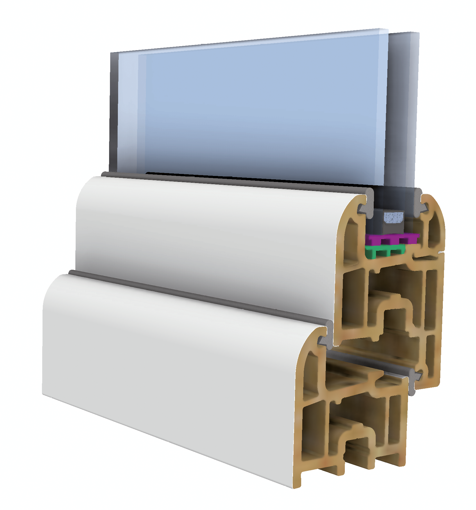
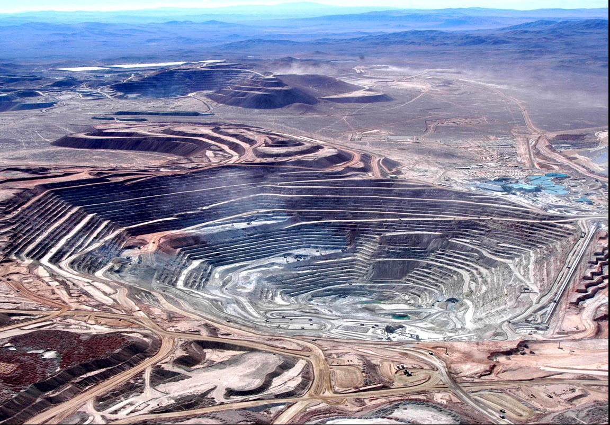
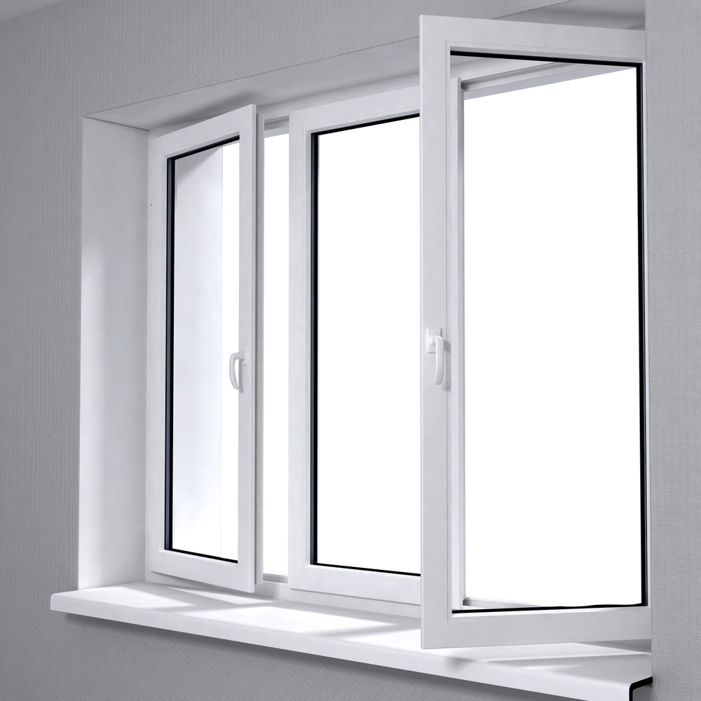
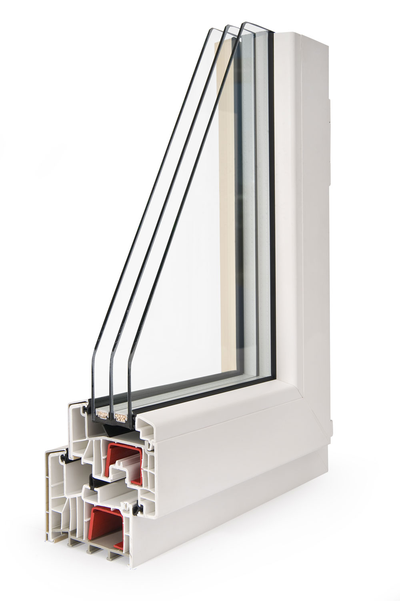
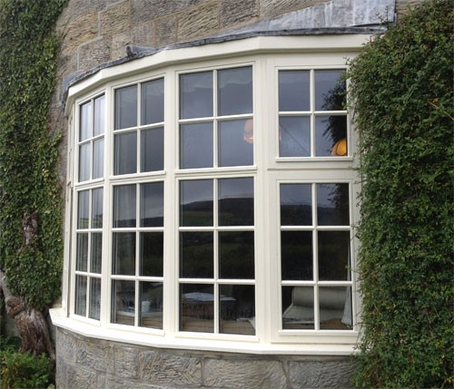
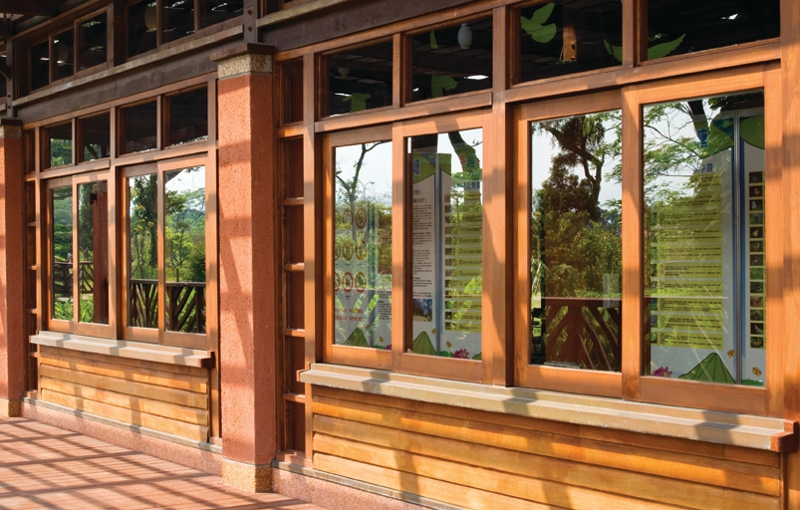
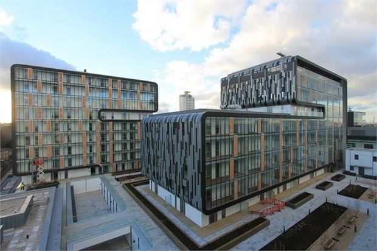

Ecolife Windows
The Uk's most eco-conscious windows
Supplied exclusively by AEL
Ecolife Windows from AEL are made using WPC
The Ecolife window profiles are extruded from Wood-Plastic-Composite material. WPC has been used for many years as a high-end decking and siding (cladding) profile in Europe, USA and the Far East.
 
WPC is an eminently suitable material for the manufacture of windows, however there has not been a WPC window available on the market.
Until now.
What makes WPC different to traditional framing materials
When used as a material for the manufacture of window profiles, WPC has a number of key advantages over other traditional materials used in the production of window profiles:
WPC
The big advantages of WPC are that it is an almost completely recycled product, made mostly from materials that would otherwise be discarded and would be damaging to the environment.
 
WPC is a very efficient material for the manufacture of window profiles, as it is strong and thermally-efficient (thanks to the wood-fibre content), it is extruded and therefore has little by-product, waste or variation in quality and the extrusion process allows relatively complex shapes to be incorporated. WPC retains a huge amount of embodied CO2 which would otherwise bereleased to atmosphere as a Greenhouse Gas.
Aluminium
Aluminium is a metal extracted principally from Bauxite which is usually obtained from open-cast mines or strip-mines in Africa, West Indies, Australia and South America. The process of open cast or strip mining usually requires the clearance of large areas due to the way that the Bauxite is distributed in layers. Any overlying soil and vegetation must be removed to allow access to the Bauxite layer. The conversion of Bauxite into aluminium requires huge amounts of energy and is usually conducted by a process of electrolysis.
uPVC
Unplasticised Polyvinyl Chloride, or uPVC, is a rigid polymer principally derived from ethylene and chlorine, which requires the introduction of stabilisers to improve resistance to heat and sunlight.
The manufacture of uPVC involves the creation of many toxic chemicals, as feedstocks, as additives or as by-products. Dioxins, including TCDD (tetrachlorodibenzo-pdioxin, one of the most toxic synthetic chemicals known) and furans are inescapable by-products of the production of the basic feedstock of PVC, vinyl chloride monomer.
 PVC needs a host of additives to make it useable. Lead, cadmium or organotins are used as stabilisers. Phthalates are used as softeners in PVC and other chemicals are used as colourants, fire-retardants and anti-oxidants.
Many of these are released into the environment. Phthalates, for example, are the world’s most common environmental pollutant and 95% are made for use in the production of flexible PVC. Some phthalates are known hormone disrupters, others are under suspicion. Others are thought to be carcinogenic.
Timber
Timber is the traditional material used in the production of windows, but the use of timber has come a long way over the last 20 years and can now be used to manufacture a modern, reliable product with a long life-cycle.
It must be ensured that timber is sourced from sustainable, certified sources and is of high-quality. The finishes which are subsequently applied must be of good quality in order to limit the passage/uptake of moisture and the finishes and preservatives must be as environmentally-benign as possible (though it should be noted that all timber preservatives are essentially a poison of some kind, used to kill fungal growth).
 Timber can be recycled, and if stored in a solid state, the CO2 inside remains sequestered and is not released. The wood-fibre used in the production of the Ecolife WPC profile is 100% wood-waste and acts to hold the embodied CO2. If it were not used in the Ecolife product it would be disposed of by incineration or would be allowed to rot, releasing the sequestered CO2 as Greenhouse Gas.
Why choose Ecolife Windows?
Ecolife WPC as an artificial carbon sink. A typical small window with 1 vent and 1 fixed light, 1200 x 1200 will use 13.5Kg of WPC profile.
Ecolife WPC profile is 50% wood-fibre by weight. Wood releases 1.8Kg of CO2 when incinerated Therefore 13.5 x 0.5 x 1.8 = 12.15Kg embodied CO2 in a (small) average Ecolife WPC window, which would otherwise be released to atmosphere if the wood had been burned instead.
The production of material for a similar-sized aluminium window, with acomparable thermal performance, would release 163.4Kg of CO2.
Who are AEL?
AEL’s areas of specialisation include Structural Silicone Glazing, where the external glass envelope is bonded or glued to the supporting internal structure and Fire Rated glazing, where highly technical specialist glass and framing systems are used to provide barriers to flame and the transfer of heat for up to 2 hours in order to protect life and property.
AEL are a long-established window manufacturer and contracting company, having been working in the commercial glazing sector since 2000.
We have successfully completed projects of all sizes and levels of
complexity, in many highly specialised areas. AEL have completed huge
unitised curtainwall projects such as the award-winning Glasgow
Museum of Transport
(Architect - Zaha Hadid) :
And Woolwich Central (Architect - Sheppard Robson)
We have been involved in the WPC market since around 2003, and have a wealth of knowledge in relation to the development of WPC as a window-framing material.
AEL are the sole source of WPC glazing systems in the UK and we intend to work hard at developing this ecologically-responsible material until it can be considered to be as mainstream as aluminium or uPVC.
Register Interest or Send Enquiry
For more information and to get comprehensive, expert advicen your specific requirements, please complete the form below
Or, contact us using the details below and one of our representatives will be happy to help you in any way we can :
Telephone
01695-732132Fax
01695-732132Postal Address
Ecolife @ AEL,Unit 6C Peel Rd,
West Pimbo Industrial Estate,
Skelmersdale,
West Lancashire,
WN8 9PT